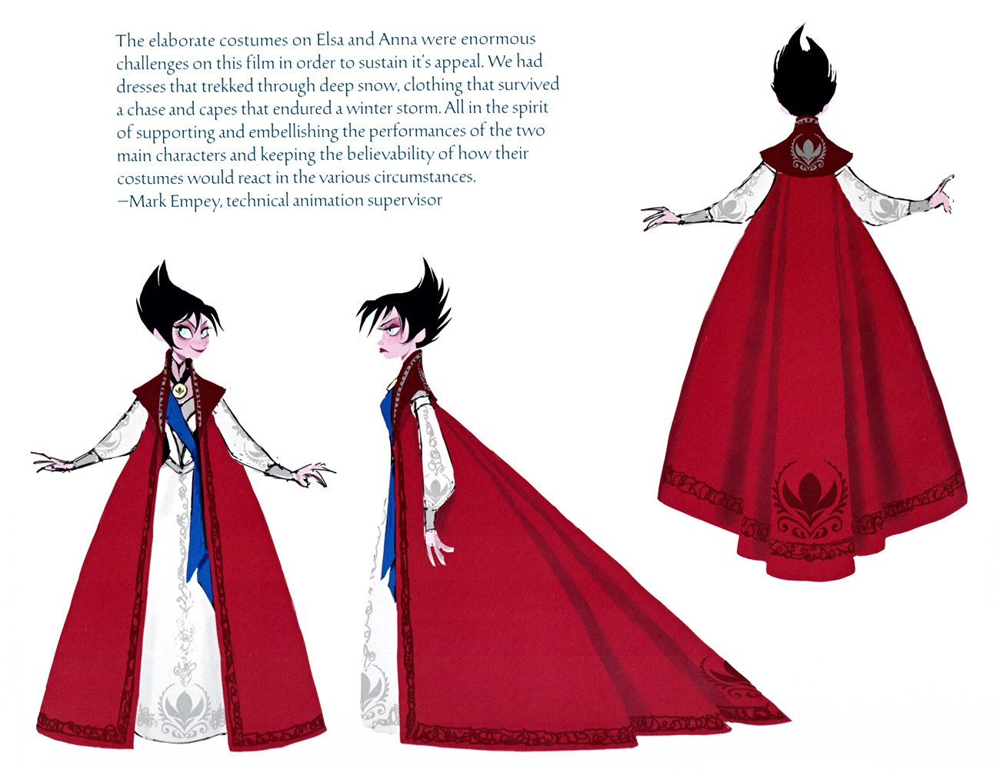
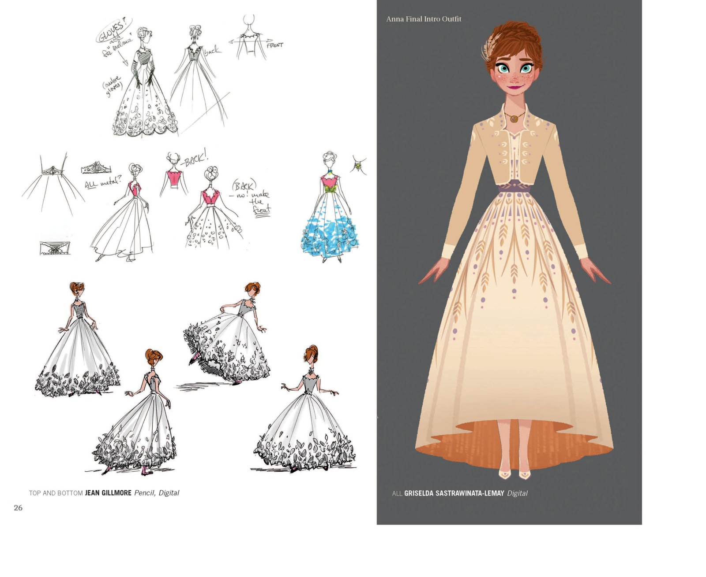
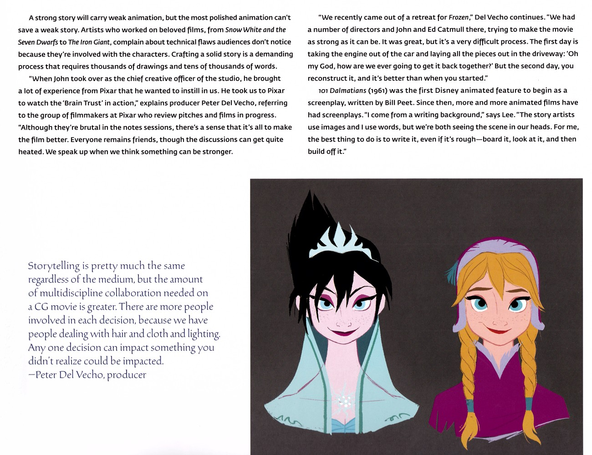

📖 设定集 · 设计稿
角色设计稿
从草图到定稿
5
本卷页数
🎨
设定集
中/英
双语
艾莎是整个系列中设计变化最大的角色。早期版本中她是纯粹的反派（roles_09 里黑发冰冠的画像就是证据）；随着《Let It Go》的诞生，她从「邪恶雪后」变成「被恐惧困住的女王」。服装设计师 Brittney Lee…
👗 设计稿
角色设计稿
从草图到定稿：艾莎的「反派变主角」、安娜的服装成长线、配角群像的设定档案——全部来自官方设定集原页。
10+
角色
14
设定页
2部
电影
原书
逐页核对
🎨 角色设计是动画电影的灵魂。《冰雪奇缘》系列的角色设计遵循「造型即性格」：艾莎的造型从反派雪后演变为自由女王，安娜的服装颜色直接映射她的成熟度，克里斯托夫的膝盖磨损在「反向推导」他的性格。以下设定页均来自官方设定集原书扫描。
❄️ 艾莎 · 从反派到英雄
艾莎是整个系列中设计变化最大的角色。早期版本中她是纯粹的反派（roles_09 里黑发冰冠的画像就是证据）；随着《Let It Go》的诞生，她从「邪恶雪后」变成「被恐惧困住的女王」。服装设计师 Brittney Lee 说：艾莎是个艺术家，她穿的一切都是魔法造的——「最暖的服装是开场那件灰紫长裙，那是她唯一一件『现实世界的布料』」。
F1中她的造型变化本身就是叙事：从紧绷的高领加冕礼服（束缚）到飘逸的开叉蓝裙（自由）。F2中她的旅行装提高了裙摆——「她要穿越森林、横渡大海、攀爬冰川，拖地长裙不可信」——旅途终点她甚至赤足。

艾莎造型演变三稿
Bill Schwab 的艾莎造型研究：铅笔披风稿、「雪后」蓝发白衣版与浅蓝女王裙版——从反派雪后到自由女王的形象跃迁全部记录在案。

艾莎角色设定开篇
「ELSA」角色章节起始页：全身定稿与角色论述。艾莎从早期反派设定一路演变为「被恐惧困住的女王」，她的造型史就是整个项目方向转变的历史。

艾莎加冕礼服设计表
加冕礼服的定稿表：深绿高领礼服、紫色披风与金色纹样——高领与束身剪裁是艾莎「自我束缚」的第一个视觉声明。

艾莎出场礼服设计
Jean Gillmore 的多版草图（含红蓝斗篷版本）与 Griselda Sastrawinata-Lemay 的定稿对照：最终定为淡紫渐变长裙，裙摆织入冰晶与叶/火纹样。

艾莎冰裙与冰披风特效
F2原书页39：艾莎旅行装的冰质披风由特效团队实现「冰晶生长」的动态，Jean Gillmore 草图并置——服装由魔法「长」出来的设计理念。

安娜与艾莎双人造型设计
Jin Kim 的铅笔定稿：安娜的花纹斗篷便装与艾莎的长袍披风并排而立——F2姐妹旅行装的标准参考图。
🌻 安娜 · 用衣服追踪成长
视觉开发艺术家 Griselda Sastrawinata-Lemay 有一句关键总结：「安娜的成熟度可以用她的衣服来追踪。」开篇的象牙白长裙代表天真烂漫；旅行装以黑色为主，代表她学会坚强；终幕套装融合了她的招牌黑色、艾莎加冕礼服的色调与阿伦黛尔的绿紫——每套服装上的扇贝形花边也随她的成熟从圆润变得方正。F2发型从双辫改为颈后绕一圈的单辫，同样是为了「更成熟」。

安娜出场礼服设计
Jean Gillmore 的多版草图（银、白、粉腰封版本）与 Griselda 的定稿对照：安娜的象牙白出场礼服最终缀以金色叶纹与淡紫腰带。

Giaimo 服装色彩稿
制作设计师 Michael Giaimo 的服装色彩研究：浓郁饱和的宝石色调从早期设计一路保留到安娜的最终配色——服装即性格的色彩宣言。

阿伦黛尔王室全家福
Claire Keene 的概念画：伊杜娜王后抱婴儿安娜、幼艾莎着深蓝裙、阿格纳国王着黑金礼服——值得注意的是早期设定里王后是金发。

故事工艺与早期姐妹像
Brain Trust 评审机制页 + Brittney Lee 所绘早期角色像：注意左侧的艾莎——黑发、冰冠、蓝袍，与她最终的白金造型相去甚远，是角色演化的珍贵「化石」。
👥 配角群像 · 设定集原页
克里斯托夫的设定页明确「他不是王子，是粗犷少言的英雄」；斯文被刻意画成「绝不尊贵」的真实驯鹿；汉斯是「从完美绅士逆转为权力型反派」，他的俊朗完美本身就是伪装；雪宝遵循「材料真实感」——雪要像雪一样动，树枝手臂以限制制造趣味。F2新增的北地角色（马蒂亚斯、叶拉娜、伊杜娜）则把萨米文化织进了服装纹样。

克里斯托夫角色设定
「KRISTOFF」开篇：叉腰站立的全身设定与多篇访谈——粗犷少言的「普通人的英雄」，萨米族服饰与品红靛蓝配色，膝盖磨损与重靴在「反向推导」性格。

斯文角色设定
「SVEN」开篇页：艺术家刻意把斯文画成「绝不尊贵」的真实驯鹿——矮胖、未梳理、眉毛极具表现力，用荒野感衬托克里斯托夫的不修边幅。

雪宝角色设定开篇
「OLAF」章节起始页：三球雪人的最终渲染与「材料真实感」论述——雪要像雪一样动、树枝手臂以限制制造趣味，于是有了断臂取物、摘头张望等经典桥段。

雪宝的夏天幻想
Mac George 绘制的雪宝夏日幻想：花丛、阳光与海滩——一个雪人对夏天最天真的向往，也是他「被冻结的快乐」的注脚。

汉斯角色设定开篇
「HANS」角色页：与主流「逆袭」叙事相反，汉斯是「从完美绅士逆转为权力型反派」——动画师形容他如变色龙般适应任何环境，他的俊朗完美本身就是伪装。

威塞尔顿公爵设计
Shihyoon Kim 的瘦高怪异体型草图 + Jean Gillmore 的转身图：胸前杂项勋章、金色肩章、品红绶带，链子上的单片眼镜是他窥探财富的标志。

巨魂数字模型
Brittney Lee 与 Jim Finn 的巨魔 3D 定稿：苔藓绿衣、大耳、圆石背——一面覆满发光地衣斑点，另一面是稻草般乱发，从概念草图到数字模型的完整推进。

马蒂亚斯将军设定
「MATTIAS」角色页：Bill Schwab 的半身像与 Griselda 的全身立绘——被困魔法森林34年的忠诚将军，他「做对的事」的信念在最黑暗的时刻支撑了安娜。

叶拉娜角色设定
「YELANA」角色页：银发编辫、面部雀斑的北地部族领袖——米白长袍镶绿松石纹样、手持木质长杖，Brittney Lee 的全身定稿与 Bill Schwab 的特写并置。

阿格纳与伊杜娜家族谱系
Brittney Lee 绘制的家族谱系图：鲁纳德→阿格纳+伊杜娜→安娜+艾莎。设计师在姐妹身上寻找遗传线索——安娜的雀斑与赤褐发、艾莎的眼色与骨骼结构。

伊杜娜角色设定
伊杜娜的全身像与披肩纹样设计：栗色发髻、紫罗兰长裙与黑紫条纹披肩。Jennifer Lee 说她是一位把家庭放在首位的慈爱母亲，她的秘密是整段旅程的钥匙。
💡 设计哲学
「造型即性格」的极致是「反向推导」：动画师不问「这个角色该怎么动」，而问「他身上的痕迹说明他过了什么样的人生」——克里斯托夫的膝盖磨损、斯文的荒野气质、汉斯的完美无瑕，都是性格的物证。
📌 本页要点
本页核心要点：①❄️ 艾莎 · 从反派到英雄：艾莎是整个系列中设计变化最大的角色。早期版本中她是纯粹的反派（roles_09 里黑发冰冠的画像就是证据）；随着《Let It Go》的诞生，她从「邪恶雪后」变成「被恐惧困住的女王」。服装设计师 Brittney Lee 说：艾莎是个艺术家…；②🌻 安娜 · 用衣服追踪成长：视觉开发艺术家 Griselda Sastrawinata-Lemay 有一句关键总结：「安娜的成熟度可以用她的衣服来追踪。」开篇的象牙白长裙代表天真烂漫；旅行装以黑色为主，代表她学会坚强；终幕套装融合了她的招牌黑色、艾莎加冕礼服的色调与阿…；③👥 配角群像 · 设定集原页：克里斯托夫的设定页明确「他不是王子，是粗犷少言的英雄」；斯文被刻意画成「绝不尊贵」的真实驯鹿；汉斯是「从完美绅士逆转为权力型反派」，他的俊朗完美本身就是伪装；雪宝遵循「材料真实感」——雪要像雪一样动，树枝手臂以限制制造趣味。F2新增的北地角…。来源：电影正典、官方设定集与官方小说综合梳理。